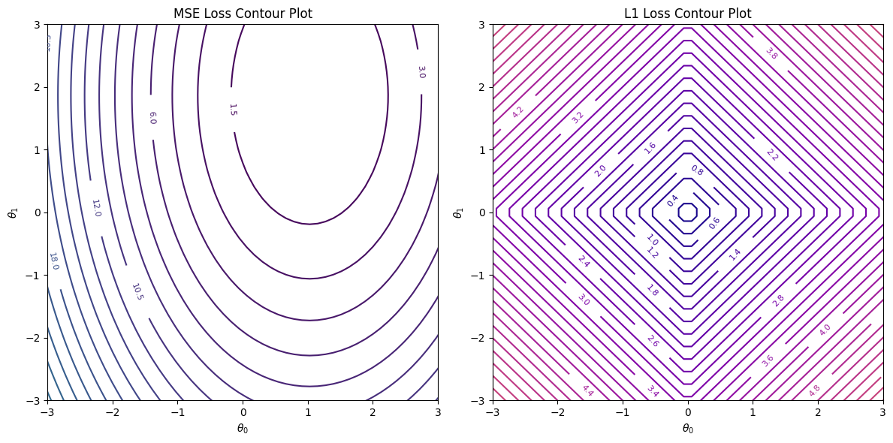
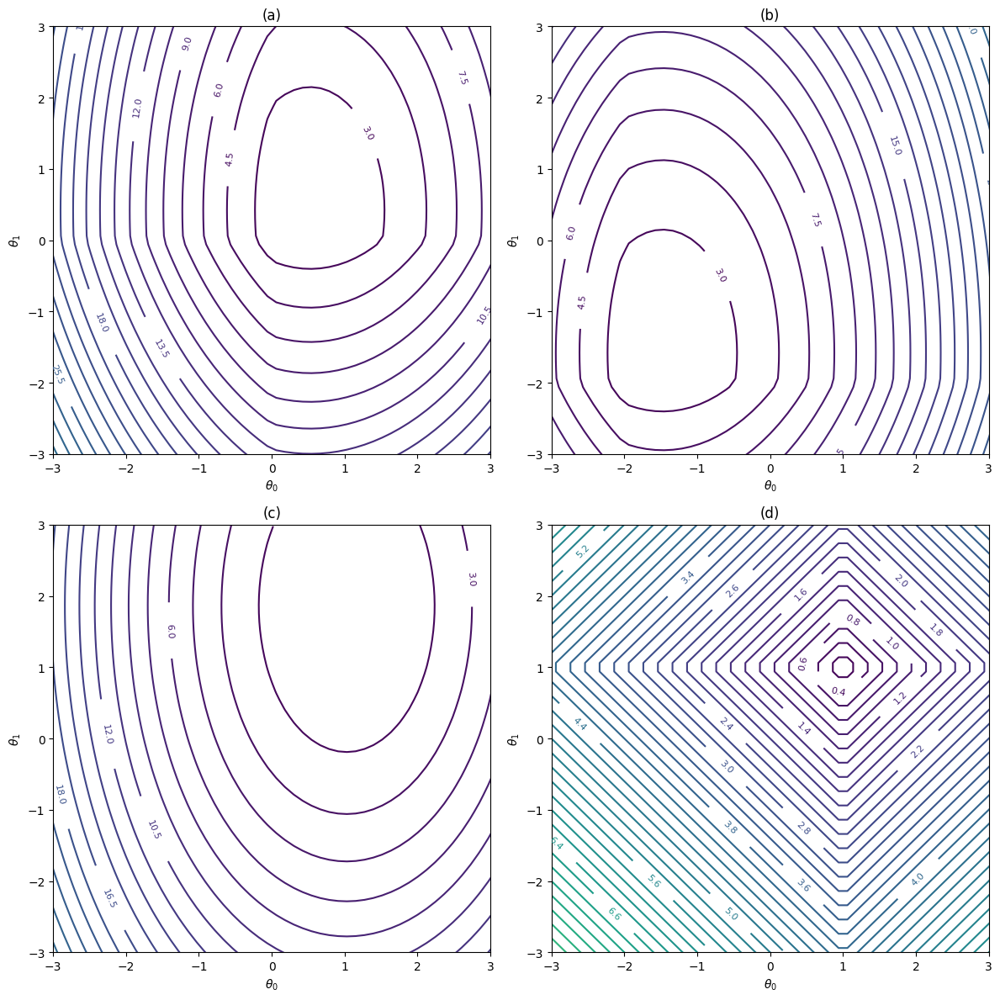
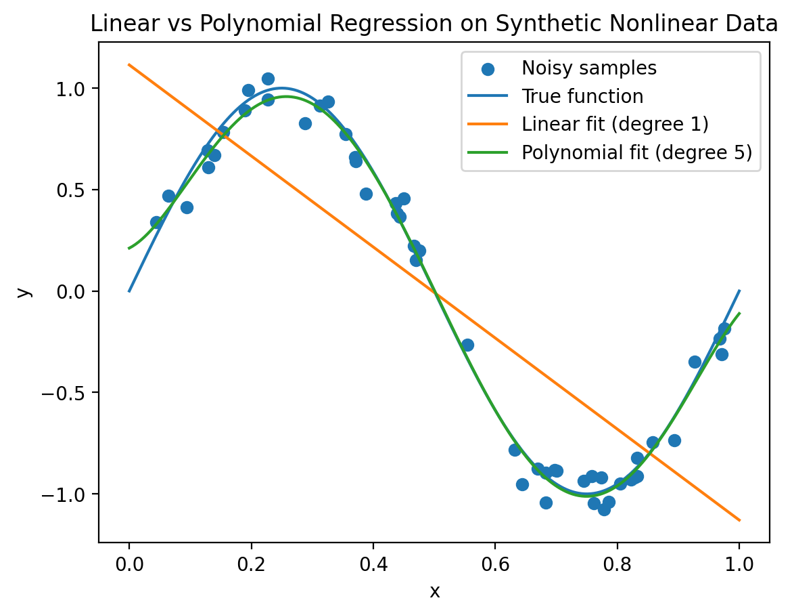
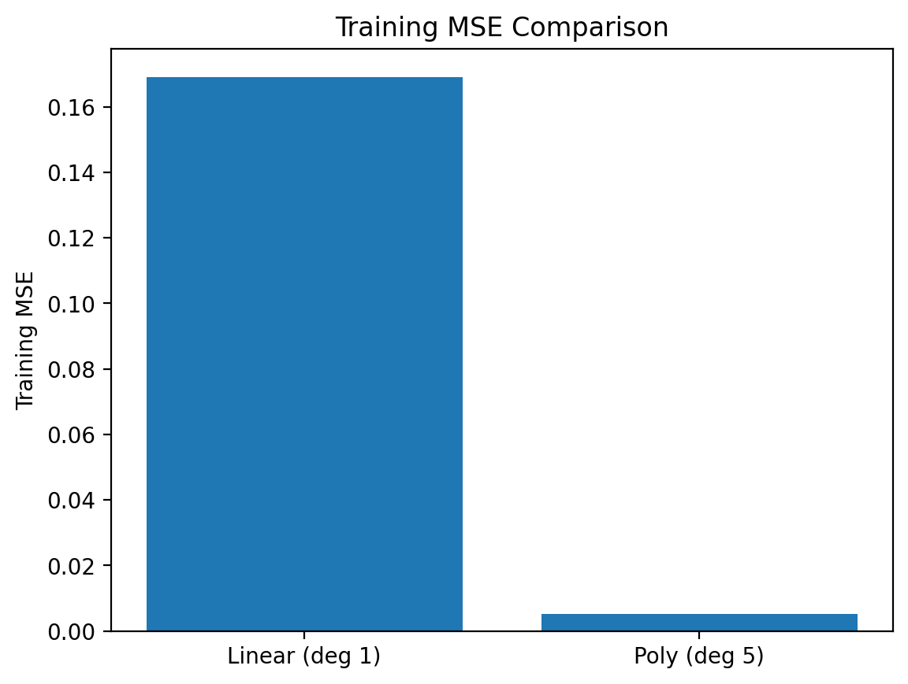

Exercises
Question 1:
Suppose you are training a machine learning model using Gradient Descent (GD) on a dataset with \(N = 1{,}000{,}000\) training examples and \(P = 100\) features. You consider the following options:
Batch Gradient Descent
Stochastic Gradient Descent
Mini-batch Gradient Descent with a batch size of \(b = 10{,}000\)
Assuming you perform one full epoch of training for each method, calculate the number of iterations required for each optimization scheme.
Batch GD: 1 iteration; Stochastic GD: 1,000,000 iterations; Mini-batch GD: 100 iterations
Batch GD: 1,000,000 iterations; Stochastic GD: 1 iteration; Mini-batch GD: 100 iterations
Batch GD: 100 iterations; Stochastic GD: 10 iterations; Mini-batch GD: 1,000 iterations
Batch GD: 1 iteration; Stochastic GD: 100,000 iterations; Mini-batch GD: 10 iterations
Answer: The correct answer is A).
Solution:
In Batch GD, one iteration computes the gradient using the entire dataset. Therefore, one epoch corresponds to 1 iteration.
In Stochastic GD, one iteration uses one training example. Therefore, one epoch requires \[N = 1{,}000{,}000 \text{ iterations.}\]
In Mini-batch GD with batch size \(b = 10{,}000\), one iteration processes one batch. The number of batches per epoch is \[\frac{N}{b} \;=\; \frac{1{,}000{,}000}{10{,}000} \;=\; 100,\] so one epoch requires 100 iterations.
Question 2:
Suppose you have a limited memory capacity that allows you to process a maximum of 50,000 data points at a time. Which optimization methods can you use without exceeding the memory limit?
Only Stochastic GD
Stochastic GD and Mini-batch GD with \(b \leq 50{,}000\)
Batch GD and Mini-batch GD with \(b = 50{,}000\)
All methods can be used without exceeding the memory limit
Answer: The correct answer is B).
Solution:
Batch GD processes the entire dataset per iteration. For \(N=1{,}000{,}000\), this exceeds the memory limit of 50,000 samples.
Stochastic GD processes one sample per iteration, which is always within the memory limit.
Mini-batch GD processes \(b\) samples per iteration, so it is feasible as long as \(b \le 50{,}000\).
Question 3:
If you wish to perform 10 full passes over the data using Mini-batch GD with \(b = 20{,}000\), how many iterations will this require?
50 iterations
5,000 iterations
1,000 iterations
500 iterations
Answer: The correct answer is D).
Solution:
Batches per epoch: \[\frac{N}{b} \;=\; \frac{1{,}000{,}000}{20{,}000} \;=\; 50.\] For \(10\) epochs, total iterations: \[50 \times 10 \;=\; 500 \text{ iterations.}\]
Question 4:
Consider the following contour plot for MSE loss of a 2D linear model, as well as the contour plot for the \(L_1\)-norm of the parameters.

Which of the following contour plots most likely represents the contour plot for the \(L_1\)-regularized MSE loss on the same model?

Answer: The correct answer is A).
Solution:
The \(L_1\)-regularized objective is \[J(\theta) = \mathrm{MSE}(\theta) + \lambda \|\theta\|_1 .\]
This objective combines two different contour geometries:
The MSE loss produces smooth elliptical contours.
The \(L_1\) norm produces diamond-shaped contours with sharp corners on the coordinate axes.
When the \(L_1\) penalty is added to the MSE loss, the resulting contours become a distorted ellipse that inherits the axis-aligned corners (kinks) from the \(L_1\) norm. These corners reflect the sparsity-inducing behavior of \(L_1\) regularization, which encourages parameters to become exactly zero.
Options (c) and (d) resemble the contours of the individual terms (MSE alone or \(L_1\) alone), so they cannot represent the combined objective.
Among the remaining choices, option (b) still appears too smooth and elliptical, similar to the unregularized MSE loss. Option (a) shows the expected elliptical shape with visible axis-aligned kinks, which is characteristic of an \(L_1\)-regularized objective.
Therefore, option (a) is the correct contour plot.
Question 5: Linear vs Polynomial Regression (Numerical + Visual)
We generate synthetic data from a nonlinear function and compare how well a linear model and a polynomial model fit the data using Mean Squared Error (MSE).
We sample data from the ground-truth function \[y = \sin(2\pi x) + \epsilon, \qquad \epsilon \sim \mathcal{N}(0,\,0.1^2).\]
We fit two models:
Linear regression (degree 1)
Polynomial regression (degree 5)
Which model should achieve the lower training MSE? Why?
Answer: Polynomial regression (degree 5).
Solution:
Step 1: Generate synthetic dataset
We sample training inputs and noisy targets: \[x_i \sim \text{Uniform}(0,1), \qquad y_i = \sin(2\pi x_i) + \epsilon_i.\]
This produces a clearly nonlinear dataset.

Linear vs Polynomial Regression fit on nonlinear data Step 2: Fit linear regression
Design matrix: \[\mathbf{X}_{\text{lin}} = \begin{bmatrix} 1 & x_1\\ \vdots & \vdots\\ 1 & x_N \end{bmatrix}\]
Model: \[\hat{\mathbf{y}} = \mathbf{X}_{\text{lin}}\boldsymbol{\theta}_{\text{lin}}.\]
Training MSE: \[\mathrm{MSE}_{\text{linear}} = \frac{1}{N}\|\mathbf{y} - \hat{\mathbf{y}}\|_2^2.\]
Because the true relationship is nonlinear, the linear model has high bias and cannot capture the curvature of the data.
Step 3: Fit polynomial regression (degree 5)
Polynomial feature map: \[\boldsymbol{\phi}(x) = [1, x, x^2, x^3, x^4, x^5]^T.\]
Design matrix: \[\mathbf{X}_{\text{poly}} = \begin{bmatrix} \boldsymbol{\phi}(x_1)^T\\ \vdots\\ \boldsymbol{\phi}(x_N)^T \end{bmatrix}.\]
Model: \[\hat{\mathbf{y}} = \mathbf{X}_{\text{poly}}\boldsymbol{\theta}_{\text{poly}}.\]
This model has greater flexibility and can approximate the sinusoidal shape of the data.
Step 4: Numerical comparison (reproducible simulation)
For the generated dataset (\(N=50\)):
\[\mathrm{MSE}_{\text{linear}} = 0.1691\] \[\mathrm{MSE}_{\text{poly}} = 0.0052\]

Training MSE comparison Polynomial regression achieves a dramatically lower training error.
Key Insight
Linear regression underfits nonlinear data (high bias).
Polynomial regression reduces bias and captures curvature.
Increasing model complexity can significantly reduce training MSE.